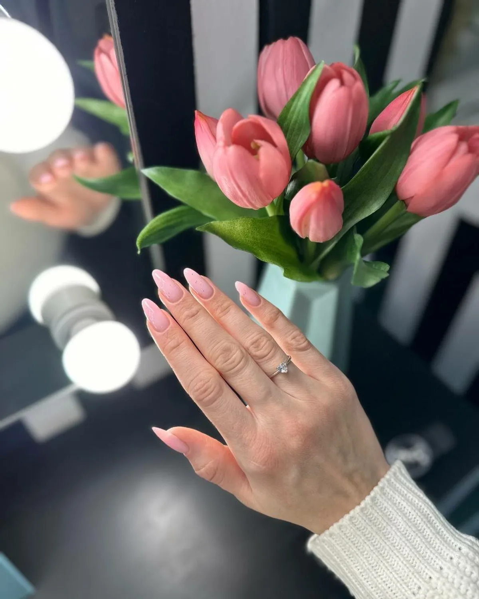
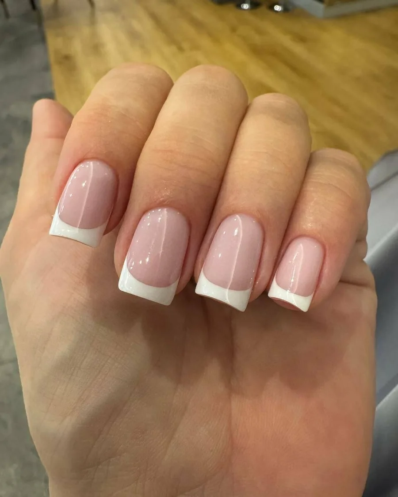
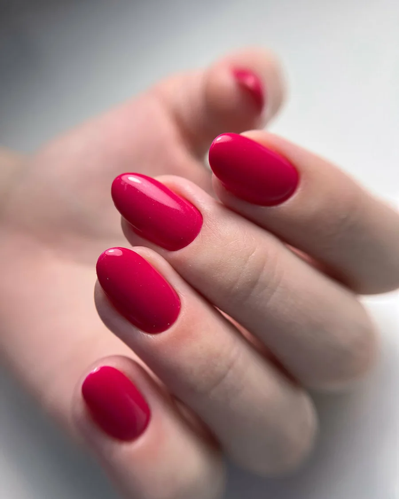
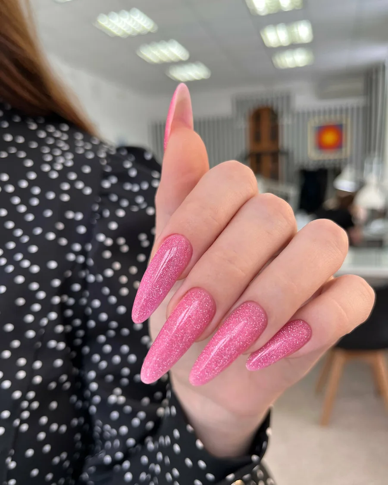

Ногтевая студия · Глазов
Маникюр и педикюр в Глазове – цены до записи
Маникюр, SMART-педикюр и наращивание ногтей. Прайс студии на одной странице, студия открыта каждый день.
- Открыто каждый день, 9:00–20:00
- 4,5 на Яндекс.Картах
- Предварительная запись

Услуги и цены
Цены с карточки студии. На карточке они отмечены как давно не обновлявшиеся: актуальные назовёт администратор.
Маникюр
- МаникюрКомбинированный или аппаратный, укрепляющее покрытие, крем и масло для кутикулы800 ₽
- Маникюр с покрытием гель-лакС атравматичным снятием прежнего покрытия1 400 ₽
Педикюр
- Обработка пальцев ногтей + гель-лакЭкспресс-педикюр, аппаратная или комбинированная техника1 500 ₽
- SMART-педикюрОбработка всей стопы в технике Смарт, пальцы – комбинированная или аппаратная техника1 500 ₽
Наращивание, дизайн ногтей, медицинский маникюр и мужской ногтевой сервис в этот прайс на карточке не входят: цены уточняйте при записи.
Как записаться
- 01
Выбираете услугу
Цена каждой названа в прайсе выше.
- 02
Записываетесь онлайн, по телефону или во ВКонтакте
На Яндекс.Картах у студии есть кнопка «Записаться онлайн».
- 03
Приходите в удобное время
Студия открыта каждый день с 9:00 до 20:00.
- 04
Приходите на Первомайскую, 41
Есть парковка и Wi-Fi.



Что важно знать
Цены видны до записи
Четыре услуги с ценами и описанием – в прайсе на странице.
Мастера разных уровней
В описании студии: начинающие, ведущие и топ-мастера.
Удобная оплата
Картой, наличными и банковским переводом. Есть подарочный сертификат.
Не только маникюр
Наращивание, дизайн ногтей, медицинский маникюр, мужской ногтевой сервис.
Отзывы с Яндекс.Карт
«Лучший маникюр за всю мою жизнь:) мастер Анастасия просто волшебная, прекрасный уровень ориентации на клиента, высочайшее качество. Тут в отзывах пишут, что это лучшая студия в Глазове - эта студия лучшая не только в Глазове :)»
Charisma · 29 августа 2025
«Отличная студия маникюра в Глазове. Оперативные ответы в мессенджерах, предупреждение о записи и качественный, чистенький маникюр. Спасибо мастерицам»
Дарья Е. · 21 июня 2024
«Салон красивый, чисто, уютно. Пользуюсь услугами салона, всего пару раз в год когда приезжаю в отпуск. Всегда прихожу к одному мастеру Анастасие. Всё быстро ( час и 20 минут) и профессионально. Как правило, маникюр другие салоны и мастера в городе делают ооочень долго) часа 2»
Елена Т. · 22 июня 2025
Отзывы с карточки на Яндекс.Картах.
Запись на ближайшие дни
- Адрес
- Первомайская ул., 41, Глазов
- Часы
- Ежедневно 09:00–20:00
- Телефон
- +7 (912) 755-03-33